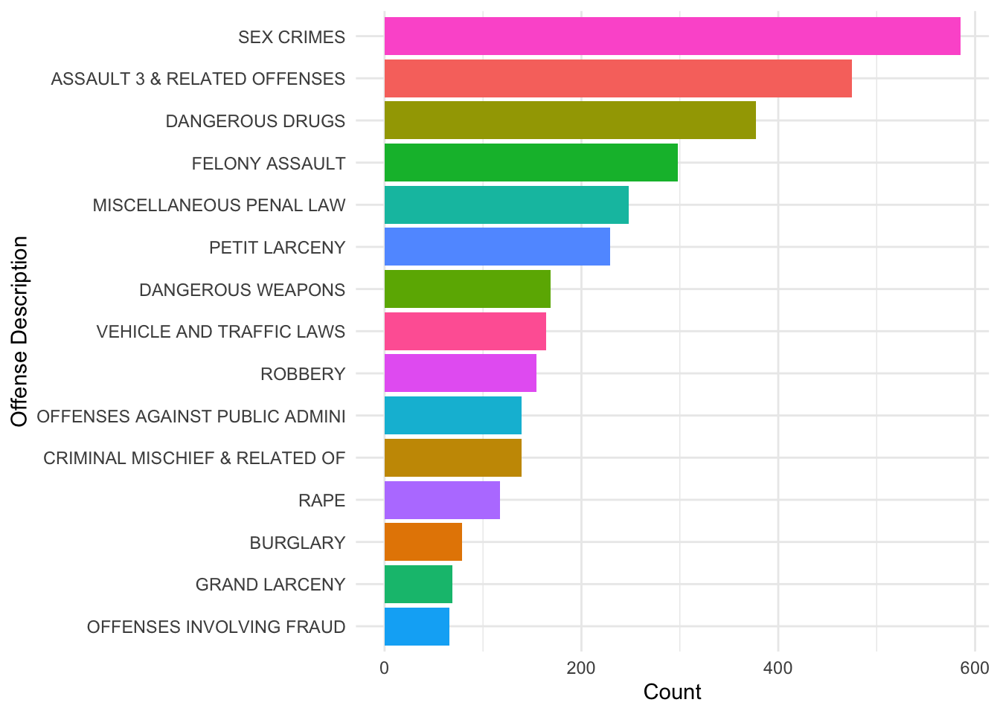

Linking to GEOS 3.11.0, GDAL 3.5.3, PROJ 9.1.0; sf_use_s2() is TRUE
# Read the datasetdata <-readRDS("dataset/nypd_shooting_clean.rds")NYPD_arrest_data <-readRDS("dataset/nypd_arrest.rds")combined_df <-merge(data, NYPD_arrest_data, by =c("X_COORD_CD", "Y_COORD_CD","Latitude","Longitude","PERP_SEX","JURISDICTION_CODE","PERP_RACE"))nypd_payroll <-readRDS("dataset/nypd_payroll.rds")nypd_payroll <- nypd_payroll %>%rename(work_boro =`Work Location Borough`,base_salary =`Base Salary`)average_salary_by_borough <- nypd_payroll %>%group_by(work_boro) %>%summarise(AverageSalary =mean(base_salary, na.rm =TRUE)) %>%ungroup() # Ensure that we remove the grouping structure
In New York City, there exists a significant correlation between low-income areas, predominantly black populations, and elevated rates of both arrests and police-involved shootings. Through an exploration of key datasets encompassing NYPD shooting incidents, payroll information, and arrest records, this analysis sheds light on the complex dynamics at play within the city’s socio-economic and racial landscape.
##Policing Poverty: The Hidden Truths of NYC’s Streets
In the bustling streets of New York City, amongst the skyscrapers and vibrant neighborhoods, lies a city divided. In some communities, the sound of police sirens is an ever-present echo, a stark reminder of the realities faced by those living in inequality. But why do certain neighborhoods experience higher rates of arrests and police-involved shootings than others?
##Patterns of Pain
Mapping offense data points across NYC, we witness the clustering of crime in certain neighborhoods, painting a vivid picture of communities besieged by violence. Overlaying this map with the racial demographics of perpetrators and victims further illuminates the disproportionate impact on black individuals, particularly young men.
Reading layer `tl_2022_36_tract' from data source
`/Users/saisriram/Desktop/MA615/Team6/tl_2022_36_tract/tl_2022_36_tract.shp'
using driver `ESRI Shapefile'
Simple feature collection with 5411 features and 12 fields
Geometry type: MULTIPOLYGON
Dimension: XY
Bounding box: xmin: -79.76259 ymin: 40.47658 xmax: -71.77749 ymax: 45.01586
Geodetic CRS: NAD83
nyc_tracts <- complete_data |>filter(COUNTYFP %in%c("005", "047", "061", "081", "085"))map_df <-st_as_sf(combined_df, coords =c("Longitude", "Latitude"), crs =4326, agr ="constant")# Plotting the shapefile for NYC tracts and overlaying pointsfinal_plot <-ggplot() +geom_sf(data = nyc_tracts, fill ="white", color ="gray") +geom_sf(data = map_df, color ="brown3", size =1, alpha =0.5) +# Adds the pointstheme_minimal() +labs(title ="Map of New York City with Offense Data Points", x ="Longitude", y ="Latitude")# Print the final plotprint(final_plot)
##The Faces of Tragedy
Zooming in on the age demographics of victims, we discover a chilling trend: the prime years of adulthood, ages 25-44, are when individuals are most vulnerable to becoming victims of violence. Among these victims, a disproportionate number are black—a reflection of the systemic biases ingrained within our society.
# Plotting Victim Age Group Distributionvic_age_counts <- data %>%count(VIC_AGE_GROUP) %>%arrange(desc(n))ggplot(vic_age_counts, aes(x =reorder(VIC_AGE_GROUP, n), y = n, fill = VIC_AGE_GROUP)) +geom_bar(stat ="identity") +theme_minimal() +labs(title ='Victim Age Group Distribution', x ='Age Group', y ='Count') +theme(axis.text.x =element_text(angle =45, hjust =1))

##Crimes of Desperation
Examining the most common crime descriptions, a troubling pattern emerges. Sex crimes, assault, and drug-related offenses dominate the landscape, pointing to the pervasive influence of poverty, addiction, and desperation within marginalized communities.
combined_df |>group_by(OFNS_DESC) |>summarise(Count =n(), .groups ='drop') |>filter(Count >=50) |>ggplot(aes(x = OFNS_DESC, y = Count, fill = OFNS_DESC)) +geom_bar(stat ="identity", position ="dodge") +coord_flip() +theme_minimal() +labs(x ="Offense Description", y ="Count") +guides(fill =FALSE)
Warning: The `<scale>` argument of `guides()` cannot be `FALSE`. Use "none" instead as
of ggplot2 3.3.4.
##Dollars and Desperation
Overlaying maps of average salaries by borough with crime data points, we confront the harsh reality of economic disparities. In neighborhoods where salaries are lowest, crime rates soar—a testament to the profound impact of poverty on the social fabric of our city.
average_salary_by_borough <- nypd_payroll %>%group_by(work_boro) %>%summarise(AverageSalary =mean(base_salary, na.rm =TRUE)) %>%ungroup()borough_to_fips <-data.frame(work_boro =c("BRONX", "BROOKLYN", "MANHATTAN", "QUEENS", "OTHER"), # Note: Ensure the names match the dataCOUNTYFP =c("005", "047", "061", "081", "085"))average_salary_by_fips <- average_salary_by_borough %>%left_join(borough_to_fips, by ="work_boro")average_salary_by_fips <- average_salary_by_fips %>%select(COUNTYFP, AverageSalary)nyc_tracts_salary <- nyc_tracts %>%left_join(average_salary_by_fips, by ="COUNTYFP")map_df <-st_transform(map_df, st_crs(nyc_tracts_salary)$epsg)final_combined_plot2 <-ggplot() +geom_sf(data = nyc_tracts_salary, aes(fill = AverageSalary), color ="gray", size =0.5) +geom_sf(data = map_df, aes(color = PERP_RACE), size =1, alpha =0.7) +scale_fill_gradient(low ="white", high ="deepskyblue4", name ="Avg Salary",na.value ="grey50", labels = scales::dollar_format()) +scale_color_manual(values =c("ASIAN / PACIFIC ISLANDER"="green", "BLACK"="brown3", "WHITE HISPANIC"="yellow", "WHITE"="deeppink", "UNKNOWN"="darkgray", "BLACK HISPANIC"="darkblue"), name ="Perpetrator's Race") +labs(title ="Average Salary and Crime Data Points by NYC Borough",subtitle ="Boroughs colored by average salary; Points indicate crime locations",fill ="Average Salary", x ="Longitude", y ="Latitude", color ="Perpetrator's Race") +theme_minimal() +theme(legend.position ="right")print(final_combined_plot2)
This comes from the file big_picture.Rmd.
Think of this page as your 538/Upshot style article. This means that you should try to tell a story through the data and your analysis. Read articles from those sites and similar sites to get a feeling for what they are like. Try to write in the style of a news or popular article. Importantly, this pge should be geared towards the general public. You shouldn’t assume the reader understands how to interpret a linear regression. Focus on interpretation and visualizations.
Rubric: On this page
You will
Title
Your big picture page should have a creative/click-bait-y title/headline that provides a hint about your thesis.
Clarity of Explanation
You should have a clear thesis/goal for this page. What are you trying to show? Make sure that you explain your analysis in detail but don’t go into top much mathematics or statistics. The audience for this page is the general public (to the extent possible). Your thesis should be a statement, not a question.
Each figure should be very polished and also not too complicated. There should be a clear interpretation of the figure so the figure has a clear purpose. Even something like a histogram can be difficult to interpret for non-experts.
Creativity
Do your best to make things interesting. Think of a story. Think of how each part of your analysis supports the previous part or provides a different perspective.
This page should be self-contained.
Note: This page should have no code visible, i.e. use #| echo: FALSE.
Rubric: Other components
Interactive
You will also be required to make an interactive dashboard like this one.
Your Big Data page should include a link to an interactive dashboard. The dashboard should be created either using Shiny or FlexDashboard (or another tool with professor’s approval). This interactive component should in some way support your thesis from your big picture page. Good interactives often provide both high-level understanding of the data while allowing a user to investigate specific scenarios, observations, subgroups, etc.
Quality and ease of use of the interactive components. Is it clear what can be explored using your interactive components? Does it enhance and reinforce your conclusions from the Big Picture? Plotly with default hover text will get no credit. Be creative!
Video Recording
Make a video recording (probably using Zoom) demonstrating your interactive components. You should provide a quick explanation of your data and demonstrate some of the conclusions from your EDA. This video should be no longer than 4 minutes. Include a link to your video (and password if needed) in your README.md file on your Github repository. You are not required to provide a link on the website. This can be presented by any subset of the team members.
Rest of the Site
Finally, here are important things to keep in mind for the rest of the site.
The main title of your page is informative. Each post has an author/description/informative title. All lab required posts are present. Each page (including the home page) has a nice featured image associated with it. Your about page is up to date and clean. You have removed the generic posts from the initial site template.